We initialized our github repository, initialized template projects, created a Parse database, and set up the base tabbed view controller for iOS. Downloaded Facebook, Google Maps, and Parse SDKs
Integrated Google Maps. We are working on constraining the map view to coordinates at or around campus. Initialized most of Parse database, working on backend cloud code now. Worked on putting the main app storyboard together.
|
|
|
Running into issue where we are exceeding our query quota on Google Maps. Enabled GPS location functionality so that the user can locate themselves. Added custom markers to the map view which are dynimcally generated using coordinates fetched from parse. Added a new category, "restroom", so that the map can begin displaying restrooms on campus. Finalized the app storyboard. Worked on Facebook login. Finalized backend database schema. Added averaging functions and new standby functions which run when the state of the backend changes (e.g. handle new user signup). Working on email and sms integration.
| 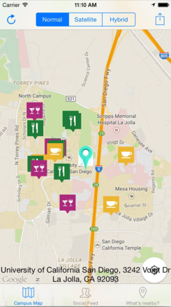 | 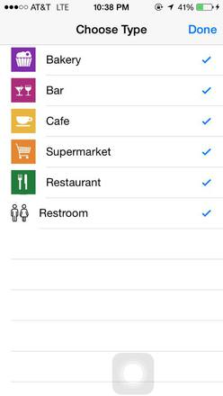 | 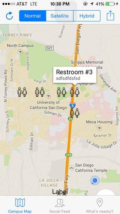 | 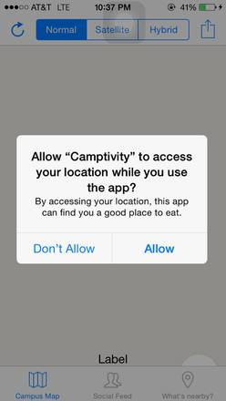 |
Committed to coding of model and controller. Research and implement mapping between two data points. Continue working on login. Working on adding API which can query the database and change the backend.
| 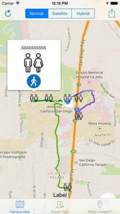 |
Model and Controller are mostly complete. Still working heavily on middleware bridging between backend and frontend code. Begin working on implementing our screens. Focusing on setting up the final design of the xcode storyboard. Most backend functions are already written. Database contains methods that are triggered automatically to calculate statistics when items such as Events or LocationRanks are created/updated by users.
| 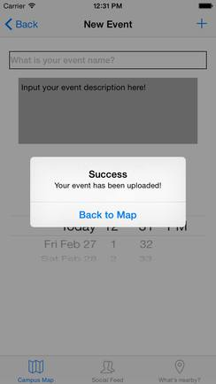 | 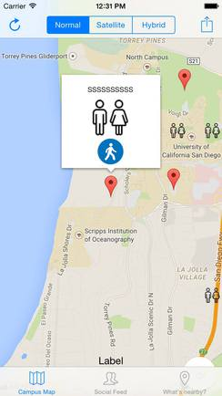 | 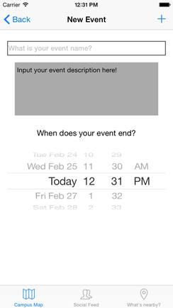 |
App is mostly done. Spending time improving UI, and integrating front-end and back-end code. Focusing on finalizing the app and doing QA. Backend and middleware are 100% compete and functional
| 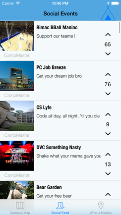 | 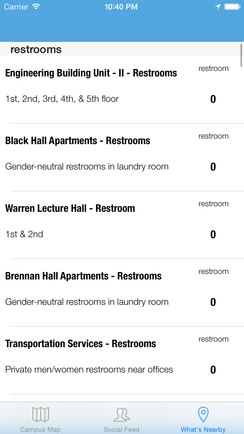 | 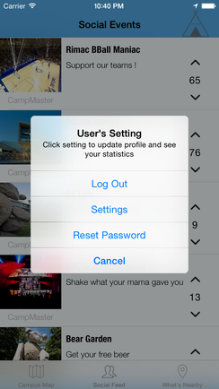 | 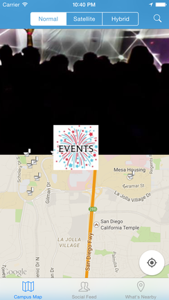 |